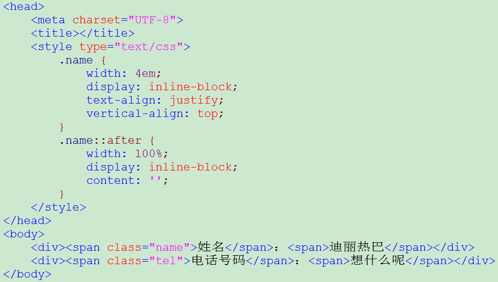

说起文本对齐，大家都知道text-align，最常用的有left、right、center，今天我们说一下justify，也就是文本两端 对齐。说起来简单，但是有些小坑大家还是要注意的。
现在我们有上图两行文本，实际开发中我们经常会遇到这样的情景：需要把姓名和电话号码这两段文字对齐。我们自然会想到 text-align: justify; 我也是这么想的，我们来试一下：
刷新一下浏览器，为什么没有效果呢？
原因是 justify 对最后一行无效，而我们的 name 只有一行，当然也就无效了。那我们怎么解决这个问题呢？
我们可以想到，既然justify对最后一行无效，那我们增加一行就好了，只要让它不是最后一行不就ok了？当然我们增加的一行可不能被人看到。这里，我们想到了伪元素。
增加没有文字的一行，我们来看看页面：
很不错，明显已经达到了要求。但是，这样写会不会太麻烦了呢，程序员都是讲究高效率（懒）的人，如果能用一句代码就完成的话，岂不乐哉？
别说，真有。这里安利一个新属性 text-align-last ，废话不多说，直接上代码：
一句代码达到需求。
真好，真好。